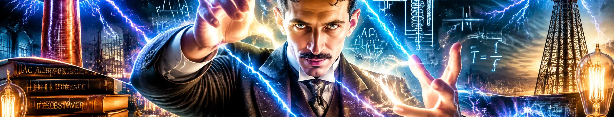

Electrical Theory
COURSE TABLE OF CONTENTS
Electrical Theory & Fundamentals
study electrical theory, calculations, circuits,
equipment, machines, tools, and installation concepts.
Select a unit below to begin studying.
Each unit is organized as a separate lesson.
COURSE PROGRESS
0%
0 of 36 units completed
01
Electrical Safety, Basic Electricity & Ohm's Law
Electrical safety, electrical fundamentals,
basic quantities, and Ohm's Law.
Electrical Safety
Electrical hazards, PPE, safe work practices,
and electrical safety procedures.
Safety Overview
UNIT 01
Atomic Structure
Atomic structure, electrons, protons,
electrical charge, conductors, and insulators.
START UNIT
UNIT 02
Electrical Quantities & Ohm's Law
Voltage, current, resistance, and the
relationship between electrical quantities.
START UNIT
UNIT 03
Static Electricity
Static electric charges, attraction,
repulsion, and the behavior of electrical charge.
START UNIT
UNIT 04
Magnetism
Magnetic fields, magnetic forces,
electromagnetism, and magnetic effects of current.
START UNIT
UNIT 05
Resistors
Resistor construction, resistance values,
color codes, tolerances, and applications.
START UNIT
02
Basic Electric Circuits
Series, parallel, and combination circuits
and their electrical relationships.
UNIT 06
Series Circuits
Series circuit operation, current flow,
voltage division, resistance, and calculations.
START UNIT
UNIT 07
Parallel Circuits
Parallel circuit operation, branch currents,
voltage relationships, and calculations.
START UNIT
UNIT 08
Combination Circuits
Series-parallel circuit analysis,
equivalent resistance, current, and voltage.
START UNIT
03
Test Instruments & Wire Sizes
Electrical measurement instruments,
conductors, wire construction, and sizing.
04
Small Sources of Electricity
Electrical conduction, batteries,
electricity sources, and magnetic induction.
UNIT 11
Conduction in Liquids and Gases
Electrical conduction through liquids and gases,
ionization, and electrical discharge.
START UNIT
UNIT 12
Batteries and Other Sources of Electricity
Batteries, cells, voltage sources,
chemical energy, and other sources of electricity.
START UNIT
UNIT 13
Magnetic Induction
Magnetic induction, induced voltage,
electromagnetic principles, and applications.
START UNIT
05
Basics of Alternating Current
Trigonometry, vectors, and the fundamentals
of alternating current.
06
AC Circuits Containing Inductance
Inductance, inductive reactance,
and AC circuits containing resistance and inductance.
UNIT 16
Inductance in AC Circuits
Inductance, inductive reactance,
magnetic fields, and AC circuit behavior.
START UNIT
UNIT 17
Resistive-Inductive Series Circuits
Series circuits containing resistance and inductance,
impedance, phase relationships, and calculations.
START UNIT
UNIT 18
Resistive-Inductive Parallel Circuits
Parallel circuits containing resistance and inductance,
current relationships, impedance, and phase angle.
START UNIT
07
AC Circuits Containing Capacitors
Capacitance, capacitive reactance,
and AC circuits containing resistance and capacitance.
UNIT 19
Capacitors
Capacitor construction, capacitance,
charging, discharging, and electrical applications.
START UNIT
UNIT 20
Capacitance in AC Circuits
Capacitance in AC circuits, capacitive reactance,
current, voltage, and phase relationships.
START UNIT
UNIT 21
Resistive-Capacitive Series Circuits
Series circuits containing resistance and capacitance,
impedance, phase angle, and circuit calculations.
START UNIT
UNIT 22
Resistive-Capacitive Parallel Circuits
Parallel circuits containing resistance and capacitance,
current, impedance, and phase relationships.
START UNIT
08
AC Circuits Containing Resistance-Inductance-Capacitance
RLC circuits, impedance, resonance,
and resistance-inductance-capacitance relationships.
UNIT 23
Resistive-Inductive-Capacitive Series Circuits
Series RLC circuits, impedance, resonance,
phase relationships, and circuit calculations.
START UNIT
UNIT 24
Resistive-Inductive-Capacitive Parallel Circuits
Parallel RLC circuits, impedance, current,
resonance, and phase relationships.
START UNIT
UNIT 25
Surge Protection and Lightning Protection
Surge protection, lightning protection,
transient voltages, and electrical system protection.
START UNIT
09
Three-Phase Power
Three-phase voltage, current,
circuits, connections, and power.
10
Transformers
Single-phase and three-phase transformers,
their operation, connections, and applications.
11
DC Machines
DC generators, DC motors,
and electromagnetic machine operation.
12
AC Machines
AC alternators, three-phase motors,
single-phase motors, installation, and harmonics.
UNIT 31
Three-Phase Alternators
Three-phase alternator construction,
electromagnetic generation, frequency, and output.
START UNIT
UNIT 32
Three-Phase Motors
Three-phase motor construction,
rotating magnetic fields, torque, connections, and operation.
START UNIT
UNIT 33
Single-Phase Motors
Single-phase motor types, starting methods,
winding arrangements, and applications.
START UNIT
UNIT 34
Motor Installation
Motor installation, connections, protection,
controls, grounding, and installation requirements.
START UNIT
UNIT 35
Harmonics
Harmonic currents, waveform distortion,
system effects, and harmonic considerations.
START UNIT